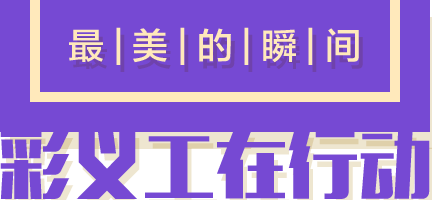

摄影作品有奖征集活动
2017年7月25日————2017年8月31日

1、关注“彩生活服务集团”官方微信公众号，了解活动动态。
2、请参赛者将计划参赛作品于2017年8月31日前发送至邮箱“1694378703@qq.com”,并标注好摄影作者、摄影作品相关时间、地点、人物、事件。
1、反映主题,体现本次活动的目的，内容必须健康向上;
2、照片规格:像素需要在1280X960以上，确保照片高清无水印;
3、要求必须是自己拍摄的照片，不可用网路图片参与活动;
4、照片中需要彩义工身着义工服参与拍摄;
5、作品描述：作品需要进行文字介绍，内容包括作品名称、时间、地点(事业部小区名称)、作者、联系方式。
一等奖：1名（彩饭票500元）
一等奖：2名（彩饭票300元）
一等奖：3名（彩饭票200元）
参与奖：多名(部分优秀作品将获得集团品牌中心提供的精美礼品一份！)
集团将邀请专家点评，结合线上公众投票评选优秀作品。评团将邀请中国摄影家协会会员、业主代表、媒体工作人员等组成。参赛作品最终成绩按照“专家团40%+公众投票60%”的得分比例得出。
网络公选前50名摄影作品将最终形成“最美的瞬间.彩义工在行动”图片摄影展，在彩生活服务集团深圳总部展出。对于参赛作品，彩生活服务集团将用于在大型公众活动及企业文化等方面展示。欢迎您拍下您眼中最美的彩生活义工服务瞬间，让我们人人举手之劳参与慈善。
*本次活动最终解释权归彩生活服务集团所有
践行慈善 最美人生